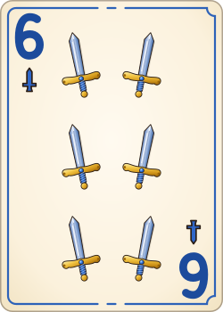
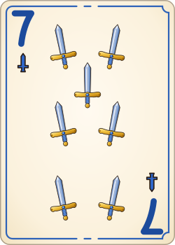
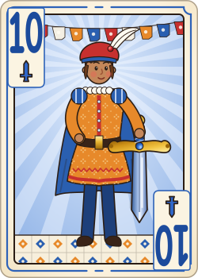

Cómo se juega
La meta: sé quien baje primero todas sus cartas en juegos: 11 en el Clásico (tus 10 y una que tomes), 10 en Familia.
La baraja
Baraja española de 40 cartas: Oros, Copas, Espadas y Bastos, del 1 al 7 y luego Sota, Caballo y Rey. No hay 8 ni 9.
El orden es 1 2 3 4 5 6 7 Sota Caballo Rey. El As va solo abajo: Rey, 1, 2 no es corrida.
Los juegos



Clásico (2 personas)
- Reparte 10 cartas a cada quien. Las otras 20 son el mazo, boca abajo.
- Se voltea una carta en medio. Aquí nunca se mete nada a la mano.
- Si te la ofrecen, solo la tomas si la bajas en ese momento en un juego (¡Me sirve!). También puedes reacomodar tus juegos.
- Luego tiras una carta. Se la ofrecen al que sigue.
- ¿Nadie la quiere? Se muere, y se voltea la siguiente.
¡Te obligo! Si la carta le hace juego al que sigue, lo puedes obligar a tomarla. Da gusto hacerlo y coraje que te lo hagan.
¿Ya bajaste todas y te falta una? Esperas una carta más que le quede a tus juegos.
Tablas: ¿se acaba el mazo y nadie ganó? Nadie gana, y la siguiente mano vale doble.
En familia (3 o 4 personas)
- Dos barajas revueltas. 9 cartas a cada quien; ganas al bajar 10.
- Al empezar, todos le pasan una carta al de la izquierda (el Cambio).
- Cada carta se le ofrece primero a quien le toca y luego solo al de su izquierda. Si nadie la toma, se muere.
How to play
The goal: be the first to lay down all your cards in melds: 11 in Classic (your 10, plus one you take), 10 in Familia.
The deck
The 40-card Spanish deck: Coins, Cups, Swords and Clubs, 1 to 7, then Jack (Sota), Knight (Caballo) and King (Rey). No 8s or 9s.
The order is 1 2 3 4 5 6 7 Jack Knight King. The Ace is low only: King, 1, 2 is not a run.
Melds
Classic (2 players)
- Deal 10 cards each. The other 20 are the pile, face down.
- A card is turned up in the middle. You never pick cards up into your hand.
- If it's offered to you, take it only if it goes straight into a meld (¡Me sirve!). You can also move your own melds around.
- Then throw one card away. It's offered to the next player.
- Nobody wants it? It's dead, and the next card is turned up.
¡Te obligo! If the card fits one of the next player's melds, you can make them take it. Fun to do, sad to get.
All your cards down but one short? Then you wait for one more card that fits your melds.
Tablas: the pile runs out and nobody's out? Nobody wins, and the next hand is worth double.
Familia (3 or 4 players)
- Two decks shuffled together. 9 cards each; lay down 10 to win.
- First, everyone passes one card to the left (the Cambio).
- Each card is offered first to the player whose turn it is, then only to the next player on the left. If nobody takes it, it's dead.